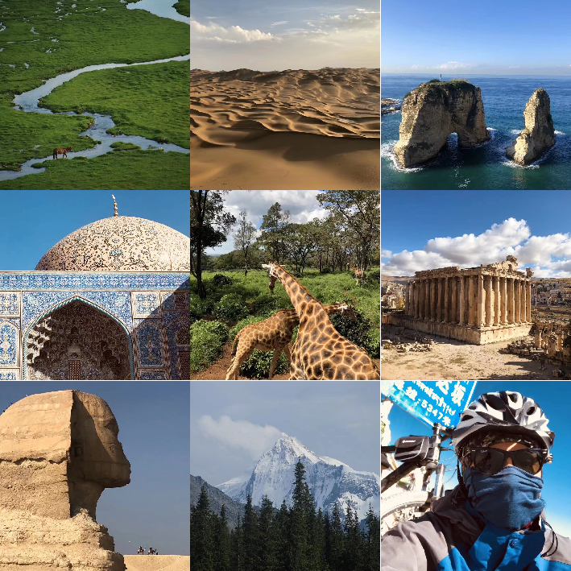
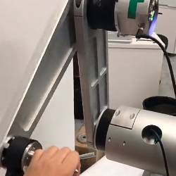
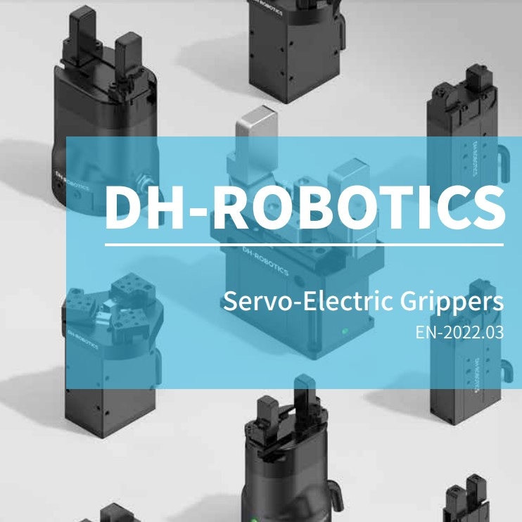

Before entering Peking University, I was a start-up employee for DH-Robotics, responsible for the electronic design and motion control of the robot gripper and arm.
Previously, I focus on data-driven image inverse problems. Recently, I'm interested in data-driven humanoid robot motion generation/control, involving intersection of computer vision, machine learning, graphics, and robotics. My long-term goal is to explore human behavior and cognition and finally build self-driven robot systems in physical simulation and reality.
I am looking for a PhD position for fall 2024. If you would like to hire or recommend, please feel free to email me!
We bring Range-Null space Decomposition (RND) into diffusion models, enabling diverse image restoration tasks in a zero-shot manner, without extra training or optimization.
We find that simply adding an independent LN to each layer can robustly improve the performance of vision transformers.
Misc

Travel around the world in 2019
- Riding bicycle through Xinjiang, Tibet, Nipel, and India
- Footprints span Germany, Malaysia, Nipel, India, UAE, Iran, Turkey, Lebanon, Egypt, Saudi Arabia, Ethiopia, Kenya, Tanzania, Rwanda, Hongkong, Macao, Taiwan, and Mainland China.

Build a Robot Arm From Scratch
- I built a two-axis robot arm with self-designed motor driver, FK & IK algorithm, trajectory generation, and 2D impedence control. 2018~2019
Zhihu

One of the original creators of these cool grippers, 2017~2018
I did
- The PCB design.
- FOC Motor Control algorithm.
- Online Trajectory Generation algorithm.
- Force Control and Impedance Control algorithm.
{kind=link}